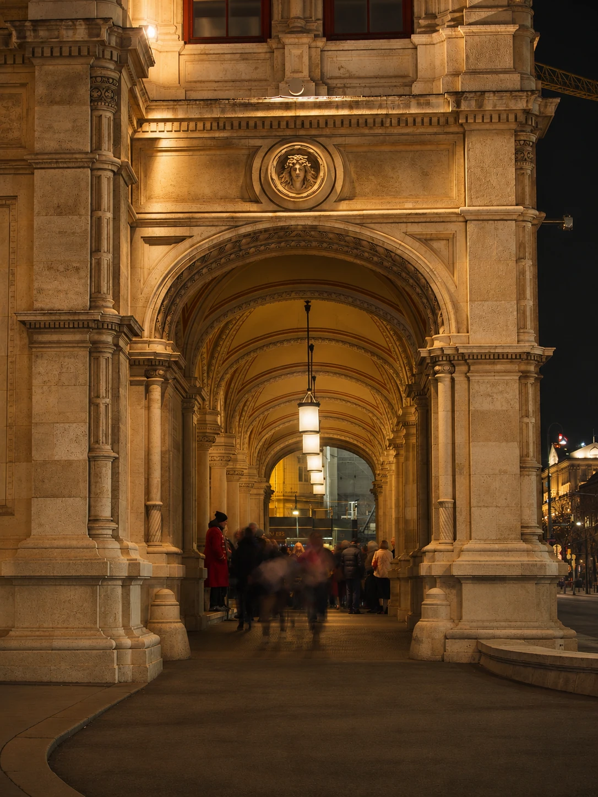
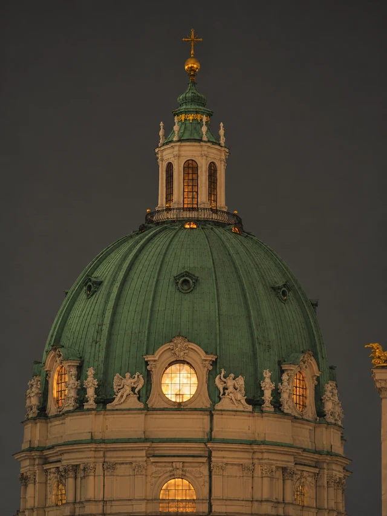
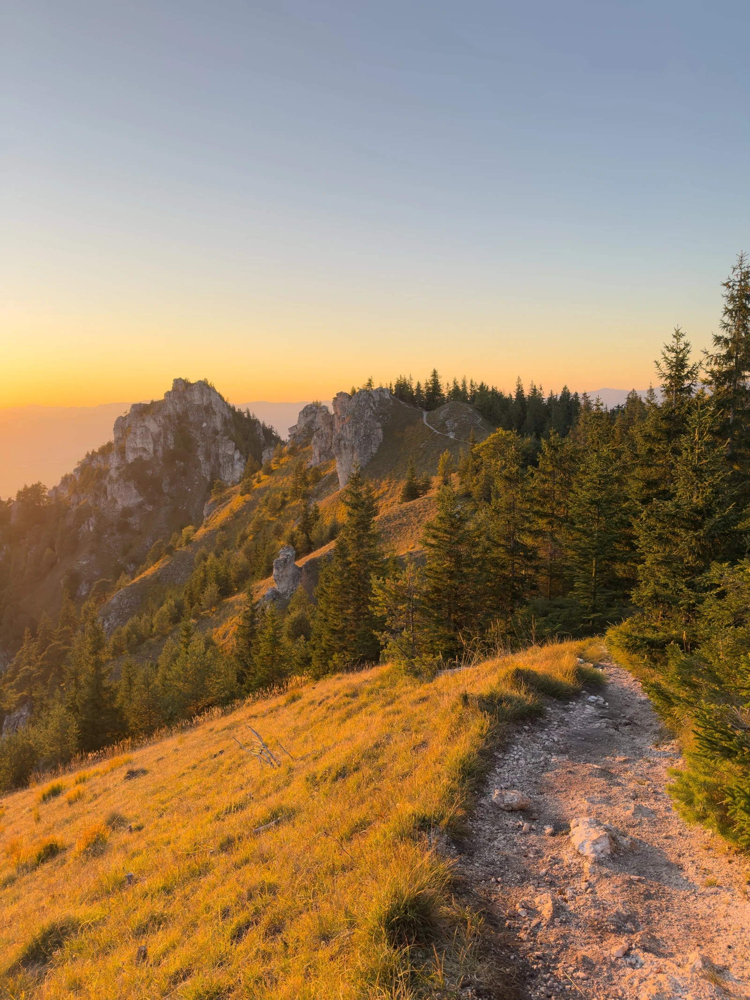

A photographic journal · Daniel Laky
Ordinary places.
Extraordinary
light.
A different way of seeing the familiar.
Architecture, nature, and the moments in between.
Independent photography · DOLESS


The gallery
A closer look.
Places that stayed with me.
Details worth coming back to.
Showing all 29 photographs.

Taking the long way round.Behind the photographs
Daniel Laky.
Seeing a little
differently.
I'm the photographer behind DOLESS. I photograph architecture, street scenes, nature and the details that are easy to miss.
My approach is simple: make the ordinary feel extraordinary without making it look artificial.
From Vienna after dark to quieter moments in nature, this gallery brings together the places, light and small discoveries that caught my eye.
Follow the journal on InstagramLet's make something
Have a story
in mind?
For photography enquiries, collaborations
or simply to say hello.